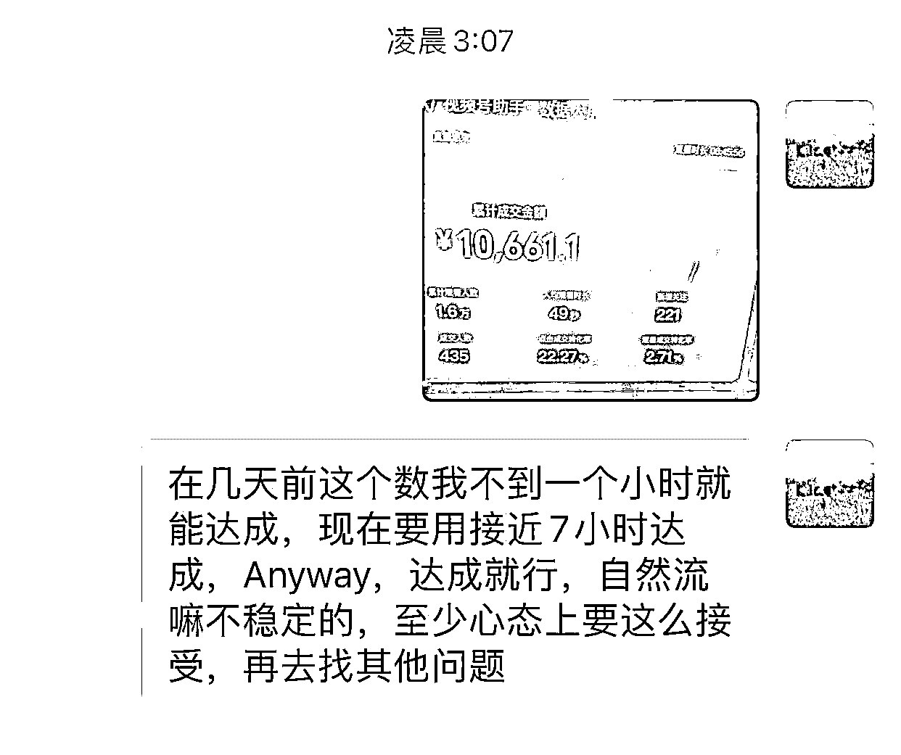

来源：https://hq4ghawgsqs.feishu.cn/docx/EpPjdvjhoos8pPxCoAAcEa03nGd
圈友好，我是李嗯嗯，一个没有团队的个体户，新手主播。
不发短视频，30天0粉丝纯自然流，一个人直播带货，达成GMV70.8万
（带货门槛是100粉丝，几十块💰搞定）
我知道这个成绩在大佬如云的生财不足挂齿，不算什么成绩，还需继续努力向圈友们学习。
但从做啥啥不行，连视频号橱窗怎么开都不知道、怀疑自己是否适合做直播、看到别的项目好赚钱，感觉别的项目好像更适合自己、到取得了一点点小成绩支撑自己继续专注的走下去，作为带货新手小白，这其中确实踩了一些坑，走了一些弯路，分享出来但愿能让入局视频号的圈友少踩一点坑。
在此过程中，我没有团队，只有我一个人，也希望帮到和我一样在犹豫，在迷茫焦虑的个体，一个人就算是新手小白，想在视频号挣到钱完全是可以的。
也再次感谢我的贵人肖肖教练和Erik教练，两位教练是我做视频号直播的领路人。感谢百万教练，在我小白期间积极回答我的诸多傻瓜问题，感谢帮助。
至今我都庆幸两年前加入了生财有术，是我至今最有价值的一笔知识付费。作为一个没有资源的普通人，如果不是生财，我何以突破信息茧房，窥得广阔的世界。真的非常感谢生财以及生财的大航海的机制，热心负责的志愿者，让我关注并真的有机会下场做视频号，深入了解视频号，才有机会链接到这些无私毫无保留分享的教练和圈友们。

为了方便圈友阅读，具体内容分为4个板块
一、创业之路
解决不了难题就逃避难题
路在脚下
二、入局视频号
别人都能爆，怎么我赚钱这么难？
三、直播带货初尝试
新手小白主播如何在2周内做到单场爆1000+单？
小白可以做视频号带货直播吗？
四、30天GMV70万是怎么达成的？
做直播想要打爆一个品，需要做什么？
新手主播适用的直播成长路径是什么？
五、直播带货是通用的必备技能
如果做短视频带货，短视频爆了，不会直播的小白怎么播能拿到更大的结果？
选择一个方向就坚定的走下去，即便最后没有做成，极致的失败也是宝贵的经验。这是我在去年6-8月的真实感悟，也奠定了后来我做视频号项目的心态，走的每一步真的都算数。
去年6-8月，这3个月我待业在深圳，开始了我的“创业”。6月和朋友在深圳做小红书电商卖莫桑钻，我把生财关于小红书的帖子差不多都刷了，热血沸腾的开干！我们设想的是积攒粉丝后开播，中间也是各种跑工厂看货源，买了大量的样品，布景拍摄短视频，拍摄小红书调性的图片，天天熬夜到两三点，最后1个月过去粉丝增长只有不到200，由于合伙人预期的生存压力，放弃了。
7月陪做童装的朋友去看佛山工厂，机缘巧合之下认识了一些做海外的团队，了解到tiktok的机会。tiktok就是早期的抖音呀，我没有眼光错过了抖音，我还能错过tiktok吗，经过了抖音的洗礼，现在去做tiktok那不是降维打击吗？我又熬了好几个夜把生财关于TikTok的帖子都看了一遍，如饥似渴的阅读各路大神激动人心的搞钱经历，热血沸腾的开始买梯子，注册各类海外软件，买tiktok的入门课。
先是花了大量时间研究东南亚，听说东南亚价格很卷利润低。又听说美国市场即将开放，美国消费力强，电商本土化我还是明白的，于是开始研究美国电商喜好。又听说美国的本土店比在中国身份开跨境店好啊，还没等跨境店，我又花了几千块买了一个美国人开的美国店，模仿海外视频风格开始拍视频，捯饬了一个多月，好不容易有了一点数据，卖了十几单，结果店就被封了，直到被封我也不知道原因到底是啥，后来听说是中介为了卖店赚钱，利用漏洞一个美国身份注册很多店，不过事实是什么样的，我也不知道，也没有心力去研究了，感觉一个人做tiktok太难了，而且在深圳的生存压力也不足以让我心无旁骛的投进去几个月，又一次放弃。
回头看，我当时的失败是注定的，用我们四川话说就是做事情东一榔头西一榔头的，怎么可能做得成。tiktok直到最后放弃，大多数的消息还是听说，我的打法就是解决不了困难但总能逃避困难吧，逃避不了困难我就放弃吧，和困难自洽，合理化失败，心安理得的接受自己的三分钟热度。经过了这两次浅尝辄止的放弃，陷入了一种啥也做不成的焦虑状态。
有一天刷朋友圈的时候，看到鱼丸发一个连麦直播，讲视频号的机会，我印象中微信做短视频不咋地呀，好奇心驱使我那天晚上我听完了整场直播，还问了很多傻瓜问题，没有粉丝怎么开橱窗啊，需要确定什么类目吗，选了一个类目改类目麻烦吗？实际上只需要100块钱0粉也可以开橱窗，做达人什么货都能带。你看，就是一些想象中的困难差点就把我劝退了。那晚听完，我意识到视频号现在成处于对普通人友好的红利期，感觉自己又行了，好，all in视频号！！
我是去年9月接触视频号的，9月和10月我主要做短视频。当时总能刷到某个直播间热卖几百几千单，一算佣金一场直播还蛮挣钱的，而且这种收银台式的直播间不需要特别的灯光布景，甚至有的连样品都没有，也能爆单，这谁稳得住？我也直接模仿抄袭，想着不就是剪辑嘛。
于是开始刷广场，花钱进各种交流群，看到别人分享的直播间就马上找素材，从早到晚都在剪视频发视频。刷到黑科技，就花钱学。每次我都以为自己找的素材挺小众的，剪辑去重做得挺好的，好家伙，一条视频我能剪一两个小时呐，结果发出去，啥也不是，要么没流量要么违规限流。
每天刷朋友圈看大神们分享的GMV截图，我鸡血满满，执行力拉满，相继尝试过短视频短视频搬运混剪、卡特效连怼、实拍轻原创、短视频口播卖货，结果都不尽人意，号快被霍霍完了，才悟到执行力也需要建立在正确动作之上。
短视频能爆，素材和品都很重要，素材为王，而好的素材基本都被搬过了，自己拍素材很难火。我是小白，选品能力差，等我在广场上刷到跟的品大概率已经卷的不行了，再冲进去，素材高度搬运很快就会被违规处理限流了
做了一个多月也没怎么挣到钱，也许在低谷的时候，就是会反复的质疑自己，质疑项目，不停的问自己适不适合吧，后来我分析不是项目不行，是我现在的能力和资源无法匹配这个项目，我是一个人，没有团队，号不够多，对租号模式不够有底气，选品能力差，连剪辑跟品速度都比别人慢几拍。尽管后来因为抓住了一个热点，小爆了一段时间，但经历的违规多了，就想着做更长期主义的项目，更有确定性一点点。
正巧在参加生财的大航海，碰巧有一天肖肖教练在生财航海群里分享60分主播0粉开直播卖货的经历，我感觉这项目行啊，天花板高且一个人也能稳定做，以前不了解，原来0粉直播也能卖好货，（现在视频号带货门槛是100粉了，几十块💰就搞定）。我由此加了肖肖老师和Erik教练 ，机缘巧合参加了肖肖教练和Erik的视频号短视频直播带货训练营，由此开始直播带货之路。
10月下旬我开始做直播，刚开始前10天基本都是挂零的，唯一的1单两单也是我自己刷的。
为了错峰抢一点流量，我基本是在凌晨2、3点开播，结果不尽人意在这么恶性循环一周之后，我把原因归结为2方面：
一、不太熟悉稿子，读了上一句不知道下一句是啥，还要卡壳停顿一下，所以新人一定要很熟悉话术稿
二、应该稍微慢一点，更适合视频号的中老年人，抖音是宝宝，视频号是哥哥姐姐叔叔阿姨。也就是涉及到一个播感的问题，找到对话感，而不是像背文章似的机械没有感情，我用了几个办法：
1、前期广场上播的好的直播间，多学习感受，录屏转文字跟读
2、对着镜子读稿背稿，一段一段的读、背，录音听
3、找家人面对面，演习直播，有对象的找对话感
4、后来还发现一个对我有用的办法，就是打印了一张目标群体的照片，直播的时候把这张照片粘贴在我对面，直播的时候代入就像在对他们面对面推销一样。
就按照这些办法，我停播了2天，每天录音几百条，一遍一遍的听是否摆脱背书的感觉，是否有对话感，打视频电话练习，找到面对面对推销的感觉，再一遍一遍重复，形成肌肉记忆。
（后来有很多小伙伴问过我怎么练直播的播感和情绪，至今我仍然是分享以上的几种办法，我当时坚信打好基本功做一些笨功夫，一通百通，后来验证确实如此）
就这样刻意练习背了几天，10月30号早上本来起晚了，不准备直播了，想了一下场景都搭好了，还是播吧，我当时给自己的心理暗示就是，不管人多人少至少要状态拉满播1个小时，正好在这1个小时，肖肖老师刷到我直播间，帮我投了一笔5000微信豆。这一场算ROI亏的，但是我的第一个转折点，借助付费有了更准确的数据（数据基数太小的时候看转化率等数据就有点不太准确），各方面的数据都能直接对照做得优秀的直播间，就能发现问题所在，当时做了一个比较详细的复盘。尽管失败了，这一场我做了一个详细的复盘。
1、转化不稳定，每轮表现有明显差异
由于话术不熟不理解，人一多我就慌了，慌不择言无法留住用户。人一少状态就掉了，说话有气无力的，没有把直播情绪体现出来，实际上正确的顺序应该是状态好才会有流量。
2、点击成交转化率太低，塑品和逼单都不好
（点了链接不创建订单，创建了订单也不付款）
（1）逼单要自信，特别是在涉及到工厂这种类人设话术时，不能带额 啊等句尾语气词，会让人感觉你在模凌两口不自信，说瞎话自己不信就真的是说瞎话，自己信了用户就会信了，送福利讲机制的时候，不要用好不好之类的，不需要征求他们的同意，这是送福利，笃定一点
（我们送福利就像撒钱，你见过老板撒钱还需要求着员工来抢的吗对吧，所以要有撒钱的自信笃定才有人信）
（2）逼单节奏差，太平感觉在读话术，实际上应该有一种催促的感觉，加快语速让用户快去买
（3）小白期间逼单环节不要自由发挥，容易拖垮节奏，不要想到哪里说哪里，放飞自我在一开始特容易跑偏，只需要按照念话术，只需要念话术就行。
很感激那个时候已经起号的杨杨同学真诚的分享，不管人再少，也是认真直播，并且拉时长，让这一场比上一场数据好，我们需要时间和状态给视频号系统喂数据，告诉它我们是一个什么样的人，需要什么样的客户。杨杨是当时最早起号的人，他的确是这样强的执行力拿到了结果。所以我要求自己最低直播3小时，人再少也要坚持3小时才下播。
我当时和2个朋友住在一起，为了不打扰到朋友生活作息。我租了个办公室，我半夜2点开车半小时去办公室通宵播，整栋楼都没人，一个女生还是有点不安全，我在4楼每次还要先按11楼再回到4楼，虚晃一下以保安全，一个人面对一堵墙和手机，激情满满的演话术，从凌晨播到早上，一场一场播，一场场的复盘。
记得有一天半夜到了办公室做样品布景的时候，恍惚间整锅的热水淋到手上，四个手指都起泡了，整晚手太痛没法直播，一个人坐在办公室里，在深圳的生存压力，迟迟没有突破，大半夜的还烫了一手泡，越想越EMO，那段时间没有上班，专职做直播带货，确实很焦虑，，醒了播，播了复盘，复盘了睡觉，醒来又播，为了没有期待的轻装上阵，没有告诉任何人，身边的朋友也不知道我在做直播带货。只有我妈知道，因为她老联系不上我，为了让她放心我就告诉她了。很感激热心铁饭碗工作的妈妈居然给了我很多鼓励。看着外面一片漆黑的，就这么坐了一夜。
但是！我安慰自己经过10月30号之后，我确实发现自己最大的问题就是感觉再读台词背课文，并且有了一些基础流量，不也是好消息！万事开头难！而且总不能又像之前一样浅尝辄止放弃吧，那样真的啥也做不成了，快天亮的时候又给自己加油打气，我可以！我行！第二天继续直播！
也许是真的有点太焦虑了，当时教练都不得不心理按摩说可以放松心态，别对自己要求这么高。虽然答道好的，但其实我又开了一个小号，誓要把直播时说话术像念台词背书的问题解决掉！向优秀的同学像素级模仿跟读学习！白天用小号直播3小时做练习，晚上再播3小时，用双倍的时间去熟悉话术，用双倍的用心去琢磨怎么解决问题。总之我坚信！熟能生巧！

坚持真的是有用的！皇天不负苦心人，在继续坚持播了3场之后，逼单成交数据都有了明显的提升：
在这一场，我还特别注意了水军，场观大也是需要水军协助的，水军最好全程带节奏引领互动挖掘互动，至少2个水军小号为佳。
1、有了话术后，新手小白简单听话照做就可以了，别自由发挥。像对标刻意模仿练习，自己满意了再直播拉时长
2、当人货场觉得还行的时候，微付费一场也好（费用一般200元-500元都可以），自然流也好，核心是借助一场场观大一点的直播，看转化相关的数据，来体现人货场存在的问题，再复盘后针对化改进就可以了（后面有细致写到怎么做复盘）
其实很多问题，比如说话无精打采，没有对话感的问题，只要直播间有流量，自然就能激动起来了，都迎刃而解了。
这场GMV上千的场次播完我有一点打开任督二脉，8号停播继续练话术，成交好的片段反复听，感受为什么那一轮卖的好，把语气反复念，形成肌肉记忆。于是9号gmv破5千，10号第一次尝到爆单的感觉，破千单！

在这一场爆单之后，对话术对直播节奏都有了更深的理解，保持好心态，持续直播，每一场都不会太差。
引用肖肖教练在大航海里分享的观点，，60分的主播+70分的场景+80分的品=爆单，因为这句话，我看到了希望开启了直播带货，我的爆单也再次印证了这一点，作为一个小白第一次做直播，回顾从起号到爆单，品都是直接用教练建议的，也有好些同行的直播间可以直接抄，我的场景和话术都是全抄的，实际上我没有做太多创新性的优化，就是提高执行力多直播，死磕话术练话术，摆脱背书念稿的感觉。直播的魅力就在于此，相对有确定性和稳定性，专注解决一个关键问题就能有明显的数提升，并且前期我焦虑和死磕的基本功熬过第一次就好，做直播一通百通，已经变成自己的能力了。
在训练营后期，2个周总GMV6.8w，第一次做0粉0作品直播带货，真的很满足了。
如果不是我和我妈还有些聊天记录，我回忆不起太多难熬的具体事项了，只记得当时很焦虑。我想找找我和朋友聊天记录回忆当时的细节，也发现寥寥无几，那段时间我就是一门心思的只想把直播这件事做好，减少社交，不背负任何期待，轻装上阵，也许是前面几个月浅尝辄止就放弃的教训，我觉得有一个确定的方向能努力，其实挺好的，就怕有劲没处使。
因此这次的6.8w对于我来说意义重大，也是对我心态成长的极大正反馈吧，我下定决心以后一定要极致失败才放弃，即便接下来没有收入，我也要all in做视频号直播带货至少3个月，如果做不成，我至少知道我真的不适合这条路，不给自己留遗憾。
直播是天时地利人和的综合因素，为了尽可能排除运气成分，掌握0粉直播起号的规律和技能，我期间多次换品换号，经历多次起号-爆单以后，我把每次打品爆单的原因总结为4要素。新手也完全适用。
为了尽可能去除爆单的偶然运气成分，掌握0粉直播起号的规律和技能。
第一个品小爆了之后，播了几天，我选择换品直播，后来发现不换品就一直播这一个品的同学，也取得了很好的成绩，直播好就好在可以稳定。
11月下旬到12月上旬有个小插曲，有好些同期航海和训练营的同学通过做短视频爆单了。其实我当时也很多次动摇是不是应该再尝试尝试短视频，看到同学们相继短视频大爆单，羡慕又心动。但是我一个人精力有限，不能兼顾好直播和短视频，思虑再三，即便直播还没有挣到太多钱，我还是坚定坚持聚焦直播。也是因为选择了聚焦，11月下旬和11月上旬这段时间，没别的事儿，就是打磨话术，研究直播，才有后来的稳定爆单，才能写出直播4要素。
（当然结合个人情况有精力的时候，多方布局肯定是更好，收益更大的）

创业九死一生，做项目也是如此，我在10月下旬第一次做直播屡遭挫折，11月和12月也是跌宕起伏。但我不再打退堂鼓，没有想是不是自己不适合，而是在想如何解决。
每一场播不好的时候，即便gmv只有几十，我会尽力琢磨很多细节请教，且一直提供选择题，琢磨多个优化想法供老师选择建议，而非把思考的过程丢给他人。遇到问题，是带有升级打怪的心理去解决掉，解决一个卡点不就是进步一点吗对吧
其次，做自然流直播，难免会遇到流量不稳定的时候，这是极其正常的，我们能做的就是持续的做好每一轮直播，持续努力的给系统喂数据，就算这场直播暂时播不好，对账号也是更好的，增加起飞概率。
知道并接受这一点，以后真的少走很多弯路，我一开始就是不知道这个作死了一些本来可以起飞的品。

12月由于办公室到期，想着再有一个月就要过年了，就从深圳回家了，休息是不可能休息的，在家里附近租了个办公室，提前把直播设备邮寄回家，开干！月gmv70万也就是这期间跑出来的。过年期间我总共就休息了初三初四两天。
执行力的具体标准是什么呢，我的定义是，“使命必达”。中间有3天数据掉了一些，我开播前的目标是一定要比上一场叠加GMV，即便一单一单地卖，播了接近14个小时也要达到目标。
我后来找到一个办法，就是带着期待去直播，
不要让每一天的直播只是机械的重复。下播后一定要进行复盘，分析问题-假设问题-假设一些解决办法-直播验证，对自己发现的问题，想到一点解决办法，把每一场直播当作测试解决办法的小实验，带着要验证这个解决办法是否有效的心态去开播，有期待的开播，记下测试结果，这些就变成了自己的直播经验，是宝贵的收获。
数据是基石，结合直播体感进行复盘
直播前期为了更好的找到问题，我写直播复盘通常会比较细致，主要从以下方面入手分析，这样的习惯确实让我的直播技能的明显的提升了几个level，新手可以直接套用。
（新手前期可以按此多详尽复盘，中后期可以只针对关键的和波动比较大的场次做深度复盘即可）
一、复盘框架，复盘可以看哪些数据：
1、大屏数据截图
2、昨天的某个改动是否有效
3、今天有哪些问题，分析原因，准备怎么做
二、复盘的内容可以有哪些？
（新手可以直接对比数据来套用理论）
A、直播大屏的复盘
关注两个数据：
1、点击创建订单率
20～30%及格，30～40%挺好，40%以上转化高
2、创建订单➡️支付成功转化率
80%～85%及格，85～90%挺好，90%以上转化高
（1）如果创建订单率不好
核心是用户点击了，但却并未产生购买欲望，点击进去看一眼就走了，再细想就是觉得这个东西不值这个价。以下的原因，都有话术和播感、演示的素材，这3个纬度的影响，这三个维度也就是每个原因的优化方向
1、有可能塑品时并未拉高产品价值感
2、放单要价环节理由不足，并未拉高用户期待。
3、上链接后的热抢氛围不够
4、链接的其他硬伤，比如实际链接商品描述和话术不符合、商品有差评置顶、sku设计太让人纠结了等
（2）如果支付转化率不好
也就是说用户已经提交订单了，但并未付款，也就是说购买冲动不够强烈（冲动都是逼出来的），这里主要是上车后的逼单效果，往话术和播感2个方向优化
逼单的逻辑是，先用限时限量优惠转化掉已种草的用户，再用塑品逼单结合优惠话术转化后来进来的新人，或是还在犹豫的用户，最后用马上就要结束，很多人都在抢的稀缺感转化从众的人
B、特殊波动
1、关注第一轮出单效果，持续优化怎么接好极速流
2、分析播的好的片段
3、分析播的不好的片段
C、相对之前，这场哪些数据有异常
每一场直播都做好数据记录，异常后，就分析为什么异常，比如本场关注率很高，是因为用了强关注的理由，有效果。比如进入率突然很高，说明场景的搭建有效了等等。
有效直播：每一场直播后都能些许感受到今天直播的问题，而不是归因不熟悉话术等基础问题或者流量不好一笔带过
越播越垮越播越没自信，越播越着急，着急付费乱投医，结果还是起不来就丧失士气。新手直播一不小心就会进入了这样的恶性循环。一而再,再而三,三而竭，珍惜自己开始播新品新号的热情和信心，所以直播前的准备工作尤其重要，把对结果的着急转化成开播前详尽的准备，对品深度的研究。除了解决话术熟悉度这些基础问题，开播播一个新的品之前，我会这么做：
（1）刷同行，观察同行的布景、商品链接（策略）、钩子、话术方面着重听塑品话术、逼单话术，感受用户购买产品的原因是什么，人群是哪些，以此来整体优化转化时的侧重点以及优化憋单时的话术
（2）刷淘宝、京东、拼多多、找到品销量好的链接，看用户评价和用户提问
（3）百度查询相关资料
（4）话术中能体现差异点或者性价比的部分，都最好找到相应的图片或资料说明
广场上数据漂亮的直播间，跟品抄话术抄场景，明明看似一模一样了，但为啥还是数据拉垮，除了直播技能的差异之外，更重要的是，可能抄错人了，对标找不好，努力全白费，不认真观察的细节都对应了今后可能踩的坑，研究越细走的弯路越少
有没有短视频？看账号属性是不是有短视频效应的达人号？也就是说评估是不是接近于纯0粉0作品的样子
例子：三农账号带有人设的或者长期在播的，同样的逼单话术就未必适用于我们的情况
a、是低价密集成交还是营造高性价比？
比如放单链接是：9.9元买5包送5包，还是29.9元买15包送15包，前者是低价少量，后者是数量多显得划算。到底哪个更好，不一定。测试低价密集成交带来的转化率优势，和高性比高客单带来的高GMV数值，对破流量圈层的影响。
b、看链接设计、如果是集合链接观察评论导向看是不是低价密集成交？
链接设计的核心是减少用户的决策成本，特别是憋单玩法，在放单那一瞬间用户点进链接清晰明了。
整理以上的对标信息，和我们个人情况接近的直播间更适合作为对标，比如我播的是自然流结合我的个人情况，我的对标就是
1、不发短视频的，纯直播的账号
2、最好只有一个主播，而非多个主播换播的直播间
3、看橱窗数据最好是近期起来的号
视频号直播有不少平播直播间，比如卖低价零食的直播间。还有就是做短视频带货也属于平播的一类，视频爆了，会直播和不会直播的人拿到的结果也有差异。
如果会直播，可以提高转化率的同时，能借短视频的流量撬动直播自然流，提高直播推荐流量占比，拿到更大的结果，一个爆款视频能带来更大的收益，且有可能把这个号给稳住，没有短视频也能持续再变现。
更重要的是，这件事不难，只需要注意2个关键动作来调整话术节奏。
刚直播的新人熟悉这两个步骤之后，相较于60分的老主播，平播也不会掉数据，
平播全程其实都在做逼单动作，逼单话术也分为几个板块：
（我随便截图了某个短视频打品群里的一个话术作为例子，如果播熟了，可以优化话术）
1、塑品介绍品话术：如上图红框处就是塑品
2、优惠活动话术：2斤麻辣味19.9，2包酱香味19.9 （如果再展示/讲解一下线下原价多少会好更好）
3、痛点+场景塑造话术：菜断生后，抄2分钟就可以出锅，老公小孩抢着吃
4、挖掘流量价值话术：已拍的给我打个已拍给你们备注加急，点了关注的破损包赔，7天无理由还有运费险（图中没有，可以加这部分话术）
直播时看手机屏幕，看2个关键动作的变化来调整话术节奏：
1、屏幕上飘过****正在去购买（代表用户去点击商品链接）
2、链接弹热卖xxx（用户创建订单并完成付款）
如果看到持续有进人，但迟迟不飘***正在去购买，也就是没有太多人去点击商品链接，则立即讲解塑品介绍品话术
看见飘**正在去购买但是没有弹热卖，也就是点了商品链接但没买，，则先讲优惠活动话术，再讲痛点+场景塑造
（说明还在观察感觉不着急现在买，核心是觉得性价比不够高，没有触发贪便宜的紧迫感，需要有人推动他才成交）
飘**正在去购买和弹热卖比较多，则挖掘流量价值，引导打互动和点关注
通过这梳理三种情况，明确直播节奏，我让没有直播过的大学生试了试接替平播，也能稳步成交，数据不掉。
1、相比抖音，视频号对于我们新手小白更友好有机会，抖音的各种电商数据太透明了，视频号目前数据不透明，还没有那么卷，还有很多人做好一个号一个品能稳定赚钱
2、视频号的主要消费群体是中老年人，这个群体习惯用微信信任微信，方便支付。相对来说，是电商带货的“新用户”，没有被各类电商清洗过，对电商的各种玩法不熟悉，新人无论是学好直播还是研究好短视频，都还能挣到钱
3、我一个人自然流直播30天能做70多万，包括很多此前训练营的同学也在自然流直播中取得不错的收益，也说明视频号相比抖音，不那么商业化，对于没有资源没有团队的小白，还能靠执行力拼出一点成绩，积攒原始资金。
4、视频号对于我们普通人绝对还有机会和红利，带着执行力冲吧！
看见了就相信了，相信了就有了动力
谢谢生财让我有机会能看见，至今我都无比庆幸两年前加入了生财有术，是我至今最有价值的一笔知识付费。作为一个没有资源的普通人，如果不是生财，我何以突破信息茧房，窥得广阔的世界。真的非常感谢生财的大航海的机制，让我关注并真的有机会下场做视频号，深入了解视频号，才有机会链接到这些无私毫无保留分享的教练。如果不是生财热心的志愿者和教练们的负责，我可能在信息的误区中想象着又放弃视频号了吧。
再次感谢在视频号项目上帮助我的肖肖教练，erik教练，两位教练直播带货真的yyds，让我这个新人也快速拿到了结果，坚持下去。感谢百万教练无私的帮助和耐心的解答，让我这个小白入门时对视频号更加了解。
欢迎正在做直播带货或者想入局直播带货的圈友一起交流，2024一起打怪升级，继续卷起来！！